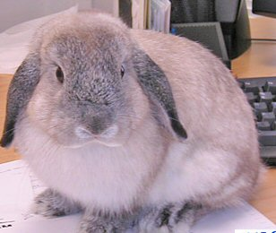

Friday, July the 2nd, 2004
back to: title, date or indexes
The more you turn your mind to lops, the more lops sally forth. Here, for example, is a Holland Lop rabbit.

And, lest we forget, that 20th century Khmer Rouge nutcase Pol Pot becomes the “Top Lop” when his name is spelled backwards, which can't be said about many other people. Well, nobody else at all, actually.